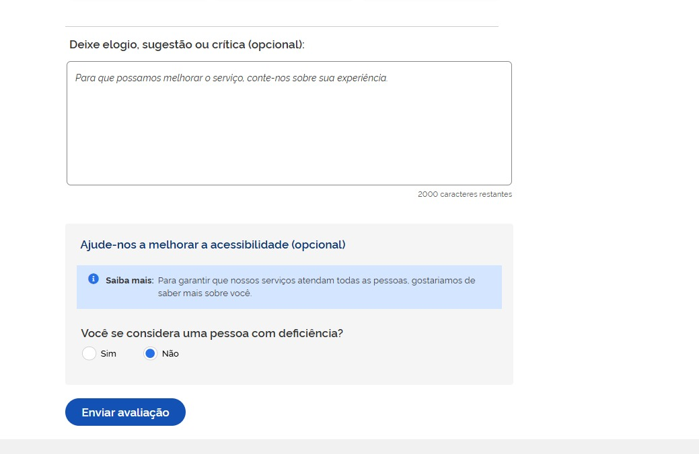

Avaliação de Serviço — TO BE¶
Modelo de coleta, apresentação, triagem e leitura gerencial da avaliação dos serviços do Portal Único do MS.
Baseado no modelo federal gov.br (Portaria SGD/MGI nº 1.083/2025) e nas regras de negócio consolidadas no estudo Avaliação dos Serviços — Portal MS.
| Versão | v1 — rascunho para validação |
| Área demandante | Superintendência de Governo Digital (SGD) — SETDIG |
| Destinatário | Xvia — time de UX e desenvolvimento do Portal Único |
| Situação | Aguardando validação do Analista de Negócios |
1. Objetivo¶
Especificar como o Portal Único do MS deve coletar, apresentar, triar e reportar a avaliação que o cidadão faz dos serviços digitais do Estado.
A coleta compreende o formulário que o cidadão preenche ao concluir um serviço; a apresentação é como a nota resultante aparece na página pública do serviço; a triagem é o tratamento do comentário aberto antes de qualquer uso; os painéis e indicadores são a leitura gerencial que sustenta a decisão de melhoria e alimenta o contrato de gestão do Governo do Estado.
O Estado opera instrumento próprio, hospedado no Portal Único. O formulário federal do gov.br é a base inicial do desenho — ponto de partida já validado em escala nacional, que dá comparabilidade desde o primeiro dia. Não é uma camisa de força: o instrumento é do Estado e pode receber novos campos conforme a necessidade da gestão, respeitadas as regras da Seção 3.7.
Fora deste pacote: definição de perfis e permissões de acesso; cessão de dados ao gov.br via API.
2. Escopos cobertos¶
| # | Escopo | Seção |
|---|---|---|
| 1 | Coleta da avaliação pelo cidadão | 3 |
| 2 | Apresentação da nota ao cidadão | 4 |
| 3 | Triagem do comentário aberto | 5 |
| 4 | Painéis e indicadores | 6 |
Não cobertos por este documento:
- Perfis e controle de acesso (RBAC). As seções abaixo indicam qual área consome cada informação, mas a modelagem de perfis e permissões é tratada em etapa própria — ver Pendência P1.
- Cessão de dados ao gov.br via API. Documento separado.
- Avaliação da carta de serviço ("Esta informação foi útil?" e "Reportar erro"), que já existe em produção e permanece como está — ver Pendência P5.
3. Escopo 1 — Coleta da avaliação¶
3.1. Ponto de disparo¶
Ao concluir um serviço, o cidadão vê na tela de confirmação um convite discreto: "Avalie este serviço".
Regra jurídica que condiciona todo este escopo: a avaliação nunca pode ser etapa obrigatória da jornada (art. 7º, §3º, Portaria SGD/ME nº 548/2022, mantido pela Portaria SGD/MGI nº 1.083/2025). Fechar, pular ou ignorar o convite deve estar sempre disponível, sem prejuízo algum ao serviço.
3.2. Cabeçalho do formulário¶
Texto fixo:
Avaliação do Serviço — {Nome do Serviço} — {Órgão}
3.3. Campos do formulário — núcleo inicial¶
Estes são os campos com que o instrumento entra no ar. Replicam o formulário federal. Único campo obrigatório é a nota; os demais podem ficar em branco sem impedir o envio.
| # | Campo | Tipo de Campo | Obrigatório | Descrição | Exemplo de Preenchimento |
|---|---|---|---|---|---|
| 1 | Como foi a sua experiência com o serviço? | rating — 5 estrelas com rótulo verbal fixo | Sim | Nota do cidadão. Rótulos: 1 Péssima, 2 Ruim, 3 Mais ou menos, 4 Boa, 5 Excelente. Valor gravado é o inteiro de 1 a 5. | 4 — Boa |
| 2 | O que você mais gostou em nosso serviço? | checkbox em formato de card — 6 opções, seleção de até 3 | Não | Motivos positivos. Opções: Fácil de usar; Site/aplicativo funcionou bem; Informações claras; Consegui resolver; Foi rápido; Fácil de encontrar. Gravado como lista de códigos. | Foi rápido; Consegui resolver |
| 3 | Deixe elogio, sugestão ou crítica | textarea — limite 2.000 caracteres | Não | Comentário livre. Placeholder: "Para que possamos melhorar o serviço, conte-nos sobre sua experiência." Contador de caracteres restantes visível. | O agendamento foi rápido, mas o e-mail de confirmação demorou. |
| 4 | Você se considera uma pessoa com deficiência? | radio — Sim / Não | Não | Autodeclaração de PcD. Dado pessoal sensível (LGPD art. 5º, II) — bloco visualmente separado dos anteriores, com o aviso: "Para garantir que nossos serviços atendam todas as pessoas, gostaríamos de saber mais sobre você." | Não |
3.4. Metadados gravados junto com a avaliação¶
Não são preenchidos pelo cidadão nem exibidos na tela. Gravados pelo sistema no momento do envio.
| # | Campo | Tipo | Obrigatório | Descrição | Exemplo de Preenchimento |
|---|---|---|---|---|---|
| 1 | id_servico | chave técnica | Sim | Identificador do serviço avaliado, vinculado ao catálogo do Portal Único. | 4f2c8e10-… |
| 2 | id_orgao | chave técnica | Sim | Órgão responsável pelo serviço, derivado do cadastro do serviço. | Polícia Militar de MS |
| 3 | canal | enum — web / mobile | Sim | Canal pelo qual a avaliação foi enviada. | web |
| 4 | data_hora | datetime ISO-8601 | Sim | Momento do envio. Base de toda agregação temporal. | 2026-08-21T14:32:07-04:00 |
| 5 | hash_sessao | SHA-256 truncado | Sim | Identificador efêmero da sessão, usado apenas para deduplicação. Não permite identificar o cidadão. Descartado em 90 dias. | a91f3c… |
| 6 | versao_formulario | inteiro | Sim | Versão da configuração de campos vigente no momento do envio. Permite comparar séries quando o formulário muda (Seção 3.7). | 1 |
3.5. Ações da tela¶
| Ação | Quando fica disponível | Efeito |
|---|---|---|
| Enviar avaliação | Habilita assim que a nota (campo 1) é escolhida. Permanece desabilitado antes disso. | Grava a avaliação e exibe a tela de agradecimento. |
| Fechar / Pular | Sempre disponível, em qualquer momento do preenchimento. | Encerra o fluxo sem gravar nada. Cidadão segue sem prejuízo. |
| Como tratamos seus dados | Sempre disponível, como link abaixo do botão de envio. | Abre o aviso de privacidade em camadas (Seção 3.8). |
3.6. Regras de negócio¶
- Convite único. Um serviço concluído gera um convite. Não há retry, lembrete, pop-up recorrente ou segunda tentativa na mesma sessão.
- Nunca bloquear. Nenhum passo do fluxo pode impedir, atrasar ou condicionar a conclusão do serviço.
- Anônimo por design. Nenhuma etapa exige login, CPF, e-mail, telefone ou nome. Esses campos não existem no formulário.
- Uma única obrigatoriedade. A nota é o único campo obrigatório. Nenhum campo adicional pode ser tornado obrigatório (ver Seção 3.7).
- Envio parcial é envio válido. Nota preenchida e demais campos em branco é uma avaliação completa e deve ser gravada normalmente.
- Deduplicação. Uma avaliação por
hash_sessao+id_servico. Tentativa repetida retorna a tela de agradecimento sem gravar novo registro. - Registro imutável. Avaliação enviada não é editável nem excluível pelo cidadão nem pelo órgão.
- Desempenho. A API de coleta deve responder em menos de 500 ms no p95. O cidadão nunca espera para enviar.
- Falha silenciosa. Se a gravação falhar, o cidadão ainda vê a tela de agradecimento. O erro é logado para o time técnico — nunca exibido como obstáculo ao cidadão.
- Tela de agradecimento. Após o envio: "Obrigado. Sua opinião foi registrada." Sem nova pergunta, sem convite a compartilhar, sem redirecionamento automático.
3.7. Extensibilidade do formulário¶
O formulário não é fixo. A composição de campos é parametrizável — a gestão pode incluir, remover, reordenar ou reetiquetar campos sem alteração de código ou deploy, seguindo o mesmo princípio já adotado no cadastro da carta de serviço.
Os campos da Seção 3.3 são o núcleo inicial: o ponto de partida com que o instrumento entra no ar, herdado do modelo federal.
Regras que qualquer campo novo deve respeitar:
- Opcional sempre. A nota permanece o único campo obrigatório. Nenhum campo adicionado pode bloquear o envio.
- Sem dado identificável. Campo novo não pode pedir nome, CPF, e-mail, telefone, endereço, localização precisa ou qualquer dado que identifique o cidadão, direta ou indiretamente. Isso é limite legal, não preferência de desenho (LGPD art. 6º, III).
- Uso declarado antes da criação. Todo campo precisa ter, no ato da criação, um indicador ou decisão de gestão que ele alimenta. Campo sem uso definido não entra — é coleta sem finalidade.
- Dado sensível exige avaliação prévia. Campo que trate de dado sensível (LGPD art. 5º, II) só entra após parecer do Encarregado (DPO), com bloco visualmente separado e aviso de finalidade, como já ocorre com a autodeclaração de PcD.
- Custo cognitivo é orçamento fechado. Formulário longo derruba a taxa de resposta. Recomendação: no máximo 6 campos visíveis simultaneamente. Acima disso, avaliar substituir um campo existente em vez de somar mais um.
- Aditivo, nunca destrutivo. Alterar a semântica de um campo do núcleo — mudar a escala, os rótulos ou o texto da pergunta 1 — quebra a série histórica e a comparabilidade com o gov.br. Se for realmente necessário, trata-se de um campo novo, não da edição do existente; o antigo é descontinuado e a mudança é registrada como nova
versao_formulario. - Versionamento obrigatório. Toda alteração da composição de campos gera nova
versao_formulario, gravada em cada avaliação (Seção 3.4). Sem isso, não há como saber se uma queda na média veio do serviço ou de uma mudança no formulário. - Avaliações antigas não são reescritas. Campo removido preserva os dados já coletados; campo adicionado nasce vazio para o histórico.
Escopo da parametrização — global, por órgão ou por serviço — e quem tem competência para alterar são pontos ainda em aberto: ver Pendência P2.
3.8. Aviso de privacidade no ato¶
Link "Como tratamos seus dados" logo abaixo do botão de envio, abrindo o texto resumido. Conteúdo integral em LGPD.
Resumo obrigatório na tela:
Sua avaliação é anônima. Não coletamos CPF, e-mail, telefone ou nome. Sua nota e seu comentário são usados para melhorar este serviço. Você pode não avaliar, sem prejuízo ao atendimento.
Base legal: Lei nº 13.709/2018 (LGPD), art. 7º, III e art. 11, II, "b" — execução de política pública prevista na Lei nº 13.460/2017.
O aviso precisa refletir a composição vigente do formulário: incluir um campo novo implica revisar este texto.
4. Escopo 2 — Apresentação da nota¶
4.1. Onde aparece¶
Na página pública do serviço, no cabeçalho, no espaço já previsto como "avaliação" na especificação da carta de serviço (Carta de Serviço — TO BE v5, §6.1).
4.2. O que aparece¶
| Elemento | Conteúdo | Condição |
|---|---|---|
| Nota média | ★ 4,3 — uma casa decimal, arredondamento padrão |
N ≥ 10 no período |
| Contagem | (1.247 avaliações) |
N ≥ 10 no período |
| Distribuição em barras | % em cada uma das 5 notas | Opcional, expansível |
| Estado de amostra insuficiente | Texto "Amostra ainda insuficiente para exibir a nota" | N < 10 no período |
4.3. Regras de negócio¶
- Corte mínimo de amostra. Nota específica só é publicada com no mínimo 10 avaliações no período. Abaixo disso, exibir o estado de amostra insuficiente — protege contra ranking injusto e contra reidentificação em serviço de baixo volume.
- Somente agregado. Nota individual, comentário individual e qualquer registro bruto nunca aparecem na área pública.
- Atualização. Nota média recalculada em tempo real, servida com cache curto. Latência aceitável de alguns minutos entre o envio e a atualização pública.
- Fórmulas publicadas:
- Nota média = Σ(nota × frequência) ÷ N
- % Satisfeitos (top-2-box) = (n₄ + n₅) ÷ N × 100
- Sem edição. O órgão não pode ocultar, editar, reordenar ou suprimir a própria nota.
- Só o núcleo é publicado. Campos adicionados via parametrização (Seção 3.7) alimentam painéis internos. Publicá-los na área pública exige decisão explícita.
5. Escopo 3 — Triagem do comentário aberto¶
O comentário aberto é o único campo em que o cidadão pode, por iniciativa própria, escrever um dado que o identifique (nome, CPF, telefone, número de protocolo). Por isso passa por triagem antes de qualquer uso.
5.1. Estados do comentário¶
| Estado | Significado | Quem move |
|---|---|---|
| Novo | Gravado, aguardando triagem. Não visível nos painéis de gestão. | Sistema, no envio |
| Triado | Revisado, sem dado identificável, liberado para os painéis. | Área de triagem |
| Suprimido parcialmente | Dado identificável substituído por [dado suprimido]. Liberado para os painéis. |
Área de triagem |
| Crítico | Contém indício de fraude, ilegalidade ou discriminação. Gera alerta imediato. | Área de triagem, ou sistema por detecção automática |
| Descartado | Sem conteúdo útil (vazio, spam, texto aleatório). Não entra nos painéis. | Área de triagem |
A área de triagem é a Ouvidoria estadual. A modelagem do acesso correspondente é tratada fora deste documento (P1).
5.2. Regras de negócio¶
- Nota independe de triagem. A nota média é computada e publicada imediatamente. Só o texto do comentário fica retido até a triagem.
- Cadência. Fila de triagem processada no mínimo uma vez por semana.
- Supressão, não exclusão. Dado identificável é substituído pelo marcador
[dado suprimido]. O restante do texto é preservado. - Detecção automática como apoio. O sistema pré-sinaliza padrões de CPF, telefone e e-mail, e palavras-chave críticas (fraude, ilegal, discriminação). A pré-sinalização sugere, não decide — a triagem é sempre humana.
- Comentário nunca é publicado bruto. Pode ser citado em relatório interno com trecho e serviço, jamais com identificador.
- Rastreabilidade. Toda ação de triagem registra autor, data/hora e estado anterior.
6. Escopo 4 — Painéis e indicadores¶
6.1. Visões¶
Quatro recortes da mesma base. A tabela indica qual área consome cada visão — a tradução disso em perfis e permissões é tratada fora deste documento (P1).
| Painel | Quem consome | Conteúdo |
|---|---|---|
| Público | Cidadão | Nota média, N e distribuição em barras, na página do serviço |
| Gestão do serviço | Órgão responsável, restrito aos próprios serviços | Nota média, % satisfeitos e N do mês e do mês anterior; distribuição; ranking dos motivos; últimos 50 comentários triados com filtro por nota; série temporal de 12 meses; alertas ativos |
| Triagem | Ouvidoria estadual, todos os órgãos | Fila de triagem; comentários críticos; encaminhamentos abertos por serviço |
| Consolidado | SETDIG, todos os órgãos | Ranking geral (10 melhores e 10 piores); % de serviços com meta atingida; volume total; serviços em alerta; comparativo por Secretaria |
6.2. Indicadores mínimos — disponíveis no go-live¶
| # | Indicador | Fórmula | Uso |
|---|---|---|---|
| 1 | Nota média | Σ(nota) ÷ N | Número público na página do serviço |
| 2 | % Satisfeitos | (n₄ + n₅) ÷ N × 100 | Leitura executiva |
| 3 | Distribuição das notas | %n₁, %n₂, %n₃, %n₄, %n₅ | Diagnóstico — identifica cauda negativa |
| 4 | Nº de avaliações no período | count() | Confiabilidade da amostra |
6.3. Indicadores desejáveis — a partir do 3º mês¶
| # | Indicador | Fórmula | Uso |
|---|---|---|---|
| 5 | Taxa de resposta | avaliações ÷ conclusões de serviço × 100 | Saúde do instrumento |
| 6 | Top motivos positivos | ranking dos cards entre notas 4 e 5 | O que preservar no serviço |
| 7 | Ranking de serviços | ordenação por nota média, com N mínimo de 30 | Priorização de melhoria |
| 8 | Variação mensal | média do mês − média do mês anterior | Alerta de queda |
| 9 | % de avaliações de PcD | n_pcd ÷ N × 100 | Recorte de acessibilidade |
6.4. Indicadores para o contrato de gestão¶
Proposta a pactuar. Os valores abaixo são recomendação do estudo e ainda não foram formalizados com as áreas responsáveis pelo contrato de gestão do Governo do Estado — ver Pendência P7.
| # | Indicador proposto | Meta orientativa | Referência |
|---|---|---|---|
| CG1 | Nota média dos serviços do Portal | ≥ 4,0 de 5 | gov.br publicou média 4,39/5 sobre 1.047 serviços em ago/2026 |
| CG2 | % de Satisfeitos (notas 4 e 5) | ≥ 80% | Padrão CSAT de mercado |
| CG3 | % de serviços com avaliação ativa | ≥ 80% do catálogo publicado | Cobertura do instrumento |
| CG4 | % de serviços com amostra válida (N ≥ 10 no trimestre) | ≥ 60% | Confiabilidade da medição |
| CG5 | % de serviços em alerta tratados no trimestre | ≥ 90% | Fechamento do ciclo de melhoria |
Duas regras que sustentam estes indicadores:
- Todo indicador de contrato de gestão precisa ser calculável a partir dos campos das Seções 3.3 e 3.4. Nenhum exige coleta adicional.
- Indicador pactuado não pode depender de campo parametrizável. Campo novo pode gerar indicador novo; não pode alterar a base de cálculo de um indicador já pactuado no meio de um ciclo.
6.5. Cadência¶
| Ritmo | Ação |
|---|---|
| Tempo real | Coleta e recálculo da nota pública |
| Semanal | Triagem da fila de comentários; relatório automático ao órgão |
| Mensal | Reunião de qualidade por órgão |
| Trimestral | Revisão do ranking geral pela SETDIG; apuração dos indicadores de contrato de gestão |
| Anual | Publicação da série histórica |
7. Notificações e alertas¶
Reaproveitam o painel de notificações do Portal Único (ícone de sino, badge de não lidas), já especificado em Carta de Serviço — TO BE v5, §7.
| Evento | Gatilho | Mensagem exibida | Destino |
|---|---|---|---|
| Queda súbita de nota | Média mensal cai 0,5 ou mais em relação ao mês anterior | "A nota do serviço {Nome do serviço} caiu de {X} para {Y} neste mês." | Órgão responsável |
| Nota baixa recorrente | Média abaixo de 3,0 por 2 meses seguidos | "O serviço {Nome do serviço} está com nota abaixo de 3,0 há 2 meses." | Órgão responsável e SETDIG |
| Volume anômalo | N mensal varia mais de 3× em relação à média móvel | "O volume de avaliações do serviço {Nome do serviço} variou de forma atípica neste mês." | SETDIG |
| Comentário crítico | Detecção de palavra-chave crítica no comentário aberto | "Um comentário do serviço {Nome do serviço} precisa de análise imediata." | Ouvidoria |
| Fila de triagem acumulada | Mais de 50 comentários no estado "Novo" há mais de 7 dias | "Há {N} comentários aguardando triagem." | Ouvidoria |
| Meta trimestral não atingida | CG1 ou CG2 abaixo da meta no fechamento do trimestre | "O serviço {Nome do serviço} fechou o trimestre abaixo da meta." | Órgão responsável e SETDIG |
| Alteração do formulário | Publicação de nova versao_formulario |
"O formulário de avaliação foi alterado. Séries anteriores a {data} usam a versão {N−1}." | Órgão responsável e SETDIG |
Toda notificação registra data e hora do evento e segue a regra do Portal: e-mail enviado pela plataforma também chega como notificação.
8. Pendências¶
Registradas conforme o Passo 6 da Instrução — Como Criar um Pacote de Documentação TO BE. Nenhuma foi resolvida por suposição.
| # | Pendência | Responsável por resolver |
|---|---|---|
| P1 | Perfis e controle de acesso. Este documento indica qual área consome cada informação, mas não modela perfis nem matriz de permissões. A definição será feita em etapa própria, alinhada ao controle de acesso já existente no Portal Único. | SGD + Xvia |
| P2 | Escopo da parametrização de campos. Definir se a composição do formulário é configurada de forma global, por órgão ou por serviço; quem tem competência para alterar; e se há aprovação prévia antes de publicar nova versão. | SGD |
| P3 | Protótipo de tela. Não há protótipo de alta fidelidade da avaliação de serviço. Este documento entrega campos, comportamento e referência visual (Seção 9); o desenho será produzido pelo time de UX da Xvia e anexado na próxima versão. | UX Xvia |
| P4 | Divergência de retenção no estudo de origem. O estudo apresenta dois cortes distintos — 24 meses com IP truncado, e 5 anos sem coleta de IP. Este documento adotou a versão mais restritiva (24 meses, zero coleta de IP, deduplicação por hash de sessão). Precisa de confirmação formal. | Encarregado (DPO) + SGD |
| P5 | Coexistência com o instrumento atual. O Portal já opera a avaliação da carta de serviço ("Esta informação foi útil? Sim/Não" e "Reportar erro"). São instrumentos distintos: um avalia a informação publicada, o outro avalia o serviço prestado. Precisam conviver na mesma página sem confundir o cidadão nem competir por atenção. Definir posicionamento e hierarquia visual. | UX Xvia + SGD |
| P6 | Ponto de disparo em serviço externo. Quando o serviço redireciona para link externo ou roda em iframe (X-Form, X-Flow, sistema de terceiro), o Portal não observa a conclusão da jornada e não sabe quando convidar. Definir a estratégia por tipo de integração. | Xvia (arquitetura) |
| P7 | Indicadores de contrato de gestão. As metas da Seção 6.4 são proposta do estudo, não pactuação formal. Precisam ser validadas com a área responsável pelo contrato de gestão. | SETDIG + SEGOV |
| P8 | Taxa de resposta depende de contagem de conclusões. O indicador 5 (Seção 6.3) exige que o Portal saiba quantas vezes cada serviço foi concluído. Confirmar se esse dado existe hoje e é confiável. | Xvia + STI |
| P9 | Encarregado (DPO) do Estado não identificado. O aviso de privacidade precisa nomear o Encarregado e seu canal de contato. Hoje o campo está vazio. | SETDIG + PGE-MS |
| P10 | Ato normativo estadual. A base legal adotada é "execução de política pública" (LGPD art. 7º, III). O lastro fica mais sólido com decreto ou resolução estadual instituindo o Modelo de Qualidade dos Serviços Digitais do MS — hoje inexistente. | SETDIG + PGE-MS |
| P11 | Origem do nome do serviço e do órgão exibidos no cabeçalho do formulário — confirmar que vêm do mesmo cadastro usado pela carta de serviço, evitando divergência de nomenclatura. | Xvia |
9. Anexos — Referências¶
9.1. Referência visual para o UX¶
Não há protótipo próprio (P3). O desenho de referência é o formulário federal em produção:
- Ferramenta de Avaliação — gov.br: https://www.gov.br/governodigital/pt-br/plataformas-e-servicos-digitais/ferramenta-de-avaliacao
- Central de Qualidade — gov.br: https://www.gov.br/governodigital/pt-br/estrategias-e-governanca-digital/transformacao-digital/central-de-qualidade
- Manual da API de Avaliação (gov.br): https://manual-avaliacao.servicos.gov.br/pt-br/latest/faq.html
Estrutura visual a ser reproduzida, capturada do formulário federal em produção:
Figura 1 — Topo do formulário. Cabeçalho, pergunta principal com a escala de 5 estrelas rotuladas e a grade de cards de motivos positivos.

Figura 2 — Parte final do formulário. Campo de comentário aberto com contador de caracteres, bloco de acessibilidade visualmente separado e botão de envio.
Três pontos de atenção para o UX:
- As figuras são referência de estrutura e sequência, não de estilo. O desenho deve seguir o design system do Portal Único, não a identidade visual do gov.br.
- O layout precisa acomodar campos adicionais (Seção 3.7) sem redesenho — blocos empilháveis, não posições fixas.
- O bloco de acessibilidade permanece visualmente separado dos demais, como na Figura 2. A separação não é decorativa: sinaliza ao cidadão que ali começa uma pergunta de natureza diferente (dado sensível, Seção 3.3).
9.2. Fundamento normativo¶
- Portaria SGD/MGI nº 1.083, de 14/02/2025 — norma vigente do Modelo de Qualidade dos Serviços Públicos federais.
- Portaria SGD/ME nº 548, de 24/01/2022 — norma anterior; origem da escala de cinco pontos e da vedação à avaliação obrigatória.
- Lei nº 13.460/2017, art. 23 — obriga a avaliação continuada e a publicação dos resultados.
- Lei nº 13.709/2018 (LGPD), art. 6º, III; art. 7º, III; art. 11, II, "b" — minimização e base legal.
9.3. Estudo de origem¶
Todo o conteúdo deste documento deriva do estudo publicado em https://fabioramos-02.github.io/avaliacao-de-servicos/. Referências diretas:
| Seção deste documento | Origem no estudo |
|---|---|
| 3.3 Campos do formulário | Perguntas da proposta |
| 3.3 Escala e rótulos | Escala — 5 estrelas rotuladas |
| 3.4 e 3.9 Metadados e retenção | Dados coletados e LGPD |
| 3.6 Regras de negócio | Fluxo da avaliação |
| 4 Apresentação | Modelo proposto |
| 5 Triagem | LGPD — anonimização |
| 6 Indicadores | Indicadores |
9.4. Documentos relacionados¶
- Carta de Serviço — TO BE v5 — página publicada do serviço (§6.1) e painel de notificações (§7), reaproveitados aqui.
- Instrução de Trabalho — Como Criar um Pacote de Documentação TO BE — formato seguido por este documento.
10. Validação¶
| Papel | Responsável | Status |
|---|---|---|
| Elaboração | SGD — SETDIG | Concluída (v1) |
| Analista de Negócios | Não identificado | Pendente |
| UX | Xvia | Pendente |
| Aprovação para desenvolvimento | SGD — SETDIG | Pendente |